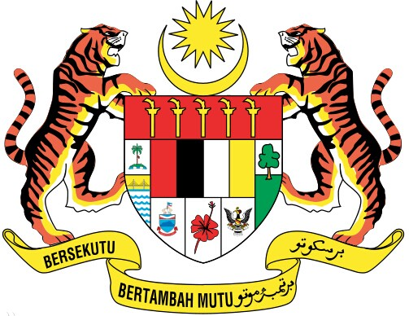
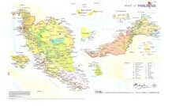

马来西亚市场
- 马来西亚国旗
- 马来西亚国徽
 马来西亚标志性建筑
马来西亚标志性建筑- 马来西亚地理位置
马来西亚概况
马来西亚是位于东南亚的一个国家
人口概况
2870万(马统计局2010年12月)。其中马来人68.7%, 华人22%, 印度人6.9%, 其他种族1.2%。马来语为国语, 通用英语, 华语使用较广泛。伊斯兰教为国教, 其他宗教有佛教、印度教和基督教等。
马来西亚经济
上世纪70年代前, 经济以农业为主, 依赖初级产品出口。70年代以来不断调整产业结构, 大力推行出口导向型经济, 电子业、制造业、建筑业和服务业发展迅速。同时实施马来民族和原住民优先的“新经济政策”, 旨在实现消除贫困、重组社会的目标。
外交关系
奉行独立自主、中立、不结盟的外交政策。视东盟为外交政策基石, 优先发展同东盟国家关系。重视发展同大国关系。系英联邦成员, 与其成员国交往较多。已同131个国家建交。
经贸往来
现为世界第18大贸易国。2006年主要出口电子电器(占总出口的47.7%)、棕榈油(5.5%)、原油(5.4%)、木材产品(4.0%)、天然气(4.0%)和石油产品(3.2%), 主要出口市场为:美国、新加坡、欧洲联盟、日本和中国。主要进口机械运输设备、食品、烟草和燃料等。